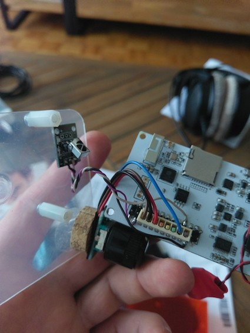
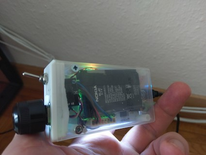
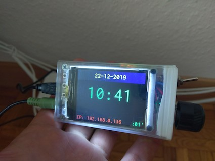

Internet radio
One of the ESP32 incarnations (with a part of first version of the body):

Battery from old Nokia phone and encoder make perfect fit into a TicTac plastic box:

With
KaRadio32
loaded the final result looks like this:
